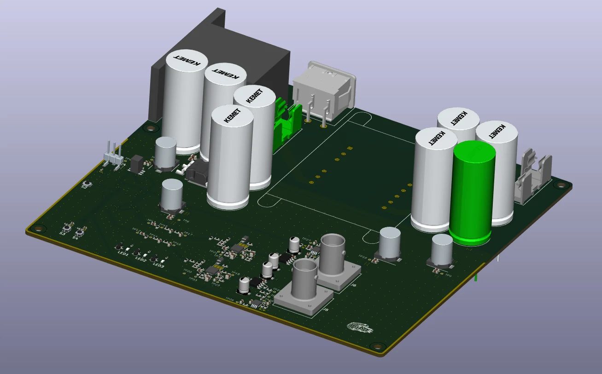
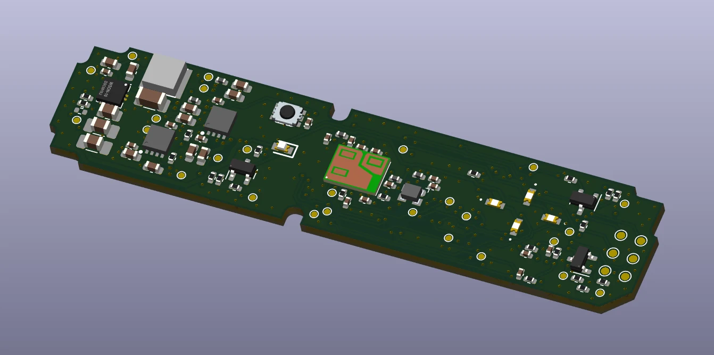

ELEKTRONIKA / REALIZACJE
Wybrane projekty
Trzy projekty elektroniczne — od architektury płytek PCB i doboru podzespołów po gotowe urządzenia.

01 / 03
Waveform Generator
Programowalny generator przebiegów DDS ze sterowaniem STM32, regulowanymi parametrami sygnału i symetrycznymi napięciami zasilania.
Zobacz szczegóły ↗
02 / 03
Radar Board
Czterowarstwowa płytka interfejsowa do mikrofalowego sensora radarowego, ze sterowaniem mikrokontrolerowym, stabilizowanym zasilaniem i komunikacją CAN.
Zobacz szczegóły ↗
03 / 03
Drone Power Board
Czterowarstwowa płytka dystrybucji zasilania z torami podstawowym i rezerwowym, układem łagodnego startu ograniczającym prąd rozruchowy oraz monitorowaniem napięć.
Zobacz szczegóły ↗